All About Flowers- With Grid System
Have you ever seen a flower and wondered what it was called, or heard a flower name and wished you knew what it looked like? Browse the flower glossary below to find the common flower name of all types of flowers that people love and repeatedly choose when they send a flower arrangement to celebrate a special occasion.
-
Alstroemeria
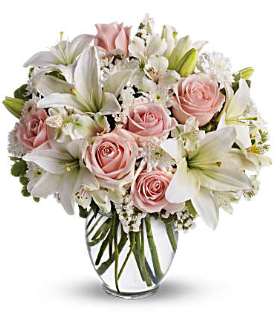Alstroemeria flowers have no fragrance. They come in a range of hues such as yellow, apricot, orange, salmon, pink, red, mauve, lavender, purple, cream, white and bi-colors. The petals are typically spotted and streaked with contrasting colors, though not all Alstroemeria have striped petals.
-
Amaryllis
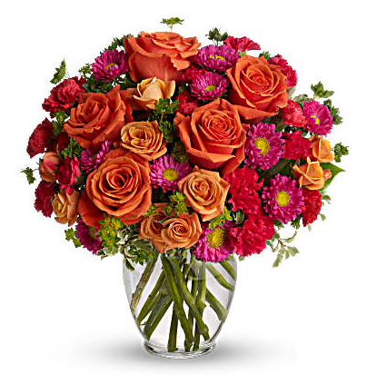Warm, rich colors of pink and orange are contrasted with fresh green – send it to sweeten a best friend's birthday, say "hi" to mom, or delight your better half Stems: Lush orange roses, hot pink matsumoto asters, hot pink carnations, bupleurum, and pitta negra Vase: Clear Glass Vase Size: Approx. 14 3/4" H x 14" W Orientation: One-Sided
-
Aster
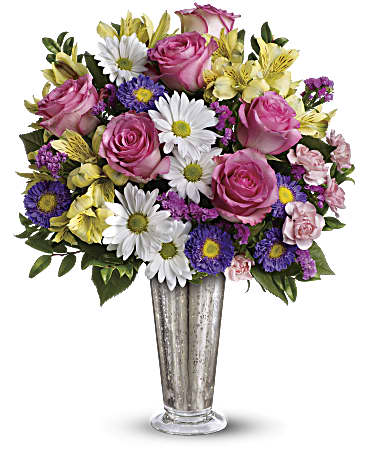Asters get their name from the Latin word for "star" because of their star-like flowers. Asters are a plant of the daisy family, with yellow-button centers and bright rayed flowers, typically of purple or pink blossoms.
-
Birds of Paradise
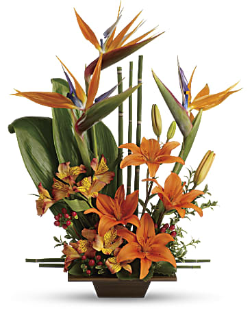Send good feng shui someone's way with this striking arrangement. Orange flowers, gorgeous green ti leaves and small bamboo-like canes are arranged in a balanced, Zen-like composition. Asiatic lilies, alstroemeria and birds of paradise are accented with red hypericum, ti leaves, galax leaves, oregonia and bamboo-like equisetum.
-
Carnation
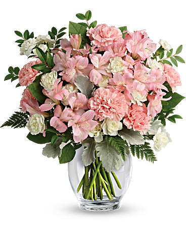Pink carnations signify a mother's love, red is for admiration and white for good luck. Our extensive network of Teleflora florists hand-deliver the same-day, if you like.
-
Monte Cassino

Asters are the September birth flower and the the 20th wedding anniversary flower. All of our bouquets are hand-delivered by a local florist.
-
Poinsettia
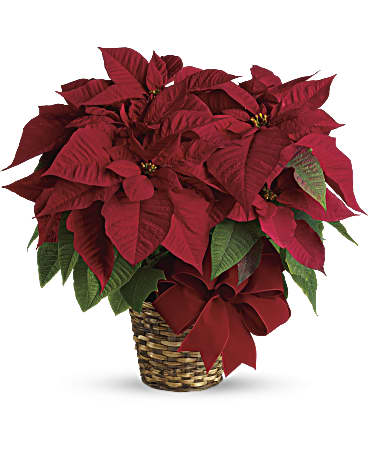Poinsettias should be watered regularly. Be careful not to over-water them, just wait until the top of the soil feels dry to the touch. If you want to grow your poinsettia in the garden after the holiday season, make sure to keep it healthy while indoors by placing the plant in a sunny, draft free location.
-
Tulip
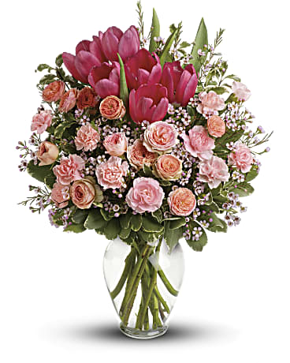A delicate tulip bouquet is graceful, elegant and fun! Our florists offer tulip arrangements in a rainbow of spring colors; regal purple, soft lavender, pastel peach, hot pink, pale pink, white and yellow. Nothing captures the spirit of the entire season like spring's signature blossom, the yellow tulip. Send a bouquet of tulips to a loved one faraway, they will be delivered right to their door by a local florist. When they call to thank you for your lovely gift, grab your wooden clogs and serenade them with this song, to let them know how much they are missed.
-
Waxflower
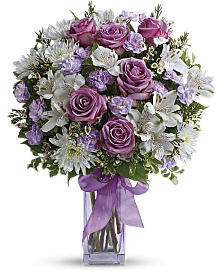Spread the love, spread the laughter, with this perky lavender and white arrangement! Bursting with snow-white alstroemeria, miniature lavender carnations and delicate waxflower, this bouquet is finished with a glistening lavender ribbon for an extra special touch.
-
Sunflower
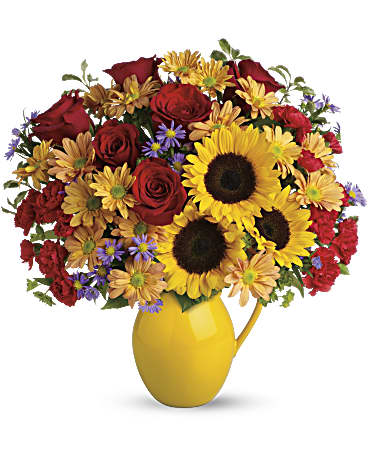Sunflowers are well-known for their tall stature and their large yellow blooms, some of which can grow to be as large as a person's head. The vibrant yellow blossoms are used for decoration and the seeds are a source of food - sunflower butter, made from sunflower seeds, is often used as a substitute for peanut butter.
-
Peony
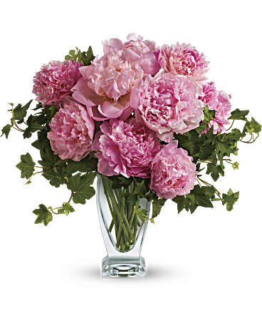Peony perfection! Everyone loves the lush, cloud-like appearance of fresh cut peonies. The romantic, feminine bloom is a popular summer wedding flower. In fact, many brides select their June or July wedding dates based on the cut peony flower season! This simple bouquet is a beautiful pick for any pink-lover. Also, a luxurious wedding centerpiece!
-
Hydrangea
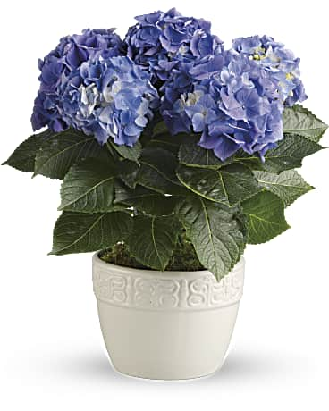Plant your hydrangea outdoors Hydrangea plants are hardy and disease-resistant for the most part, though they can be infected with mildew if planted in areas that are shady and humid,. For best conditions, plant them in a sunny spot and offer plenty of water. The hues can change depending on the type of soil the flowering plants are put in. For example, pink hydrangeas will turn blue when planted in acidic soil
-
Gerbera
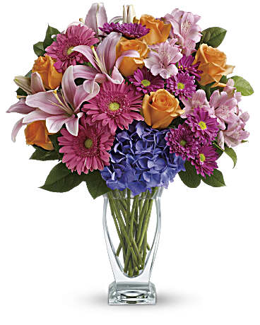Gerberas are long-lasting and best known for their brightly colored petals, they are the most popularly used blossoms among florists. Order a gerbera bouquet today by 3PM and we can florist deliver it the same-day